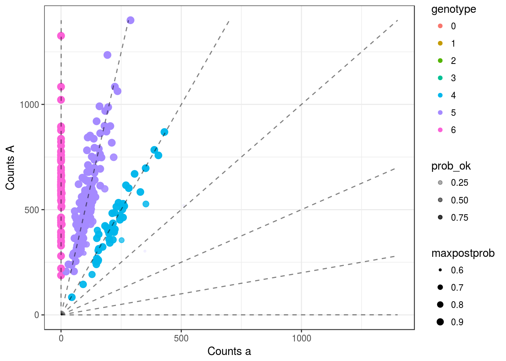
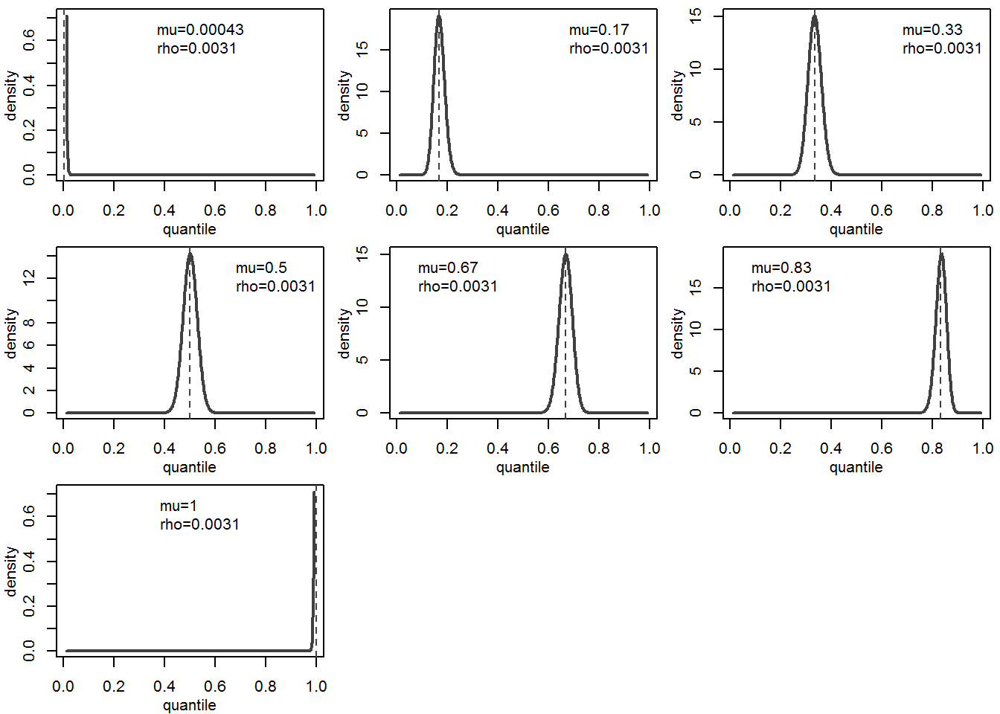
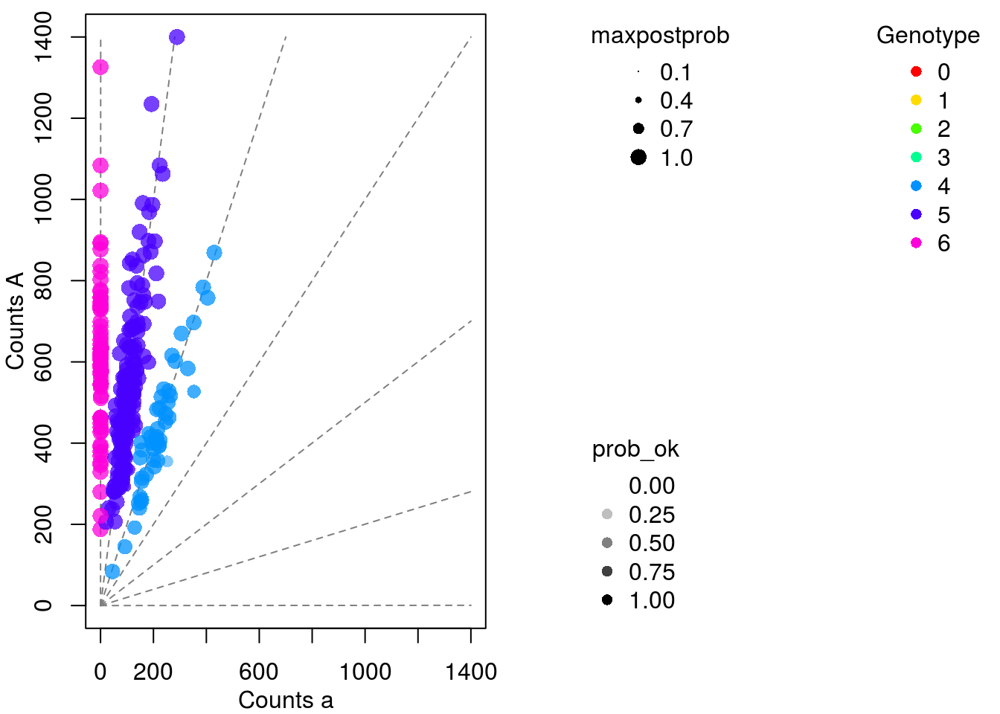

Look at updated estimate of sequencing error
First Last
2016-12-20
Last updated: 2016-12-20
Code version: ‘a37f297679bf9aeafae91812996f826c1a4ae1df’
Here, I demonstrate some new methods for the output of updog.
Demonstration
library(updog)
set.seed(483)
load("../data/subset_David.Rdata")
dat <- subset_david
lastp <- 12 ## number of final rows that are parents
## Run `updog`
cmat <- dat[[2]]
p1dat <- cmat[(nrow(cmat) - lastp + 1):(nrow(cmat) - lastp / 2), ]
p2dat <- cmat[(nrow(cmat) - lastp / 2 + 1):nrow(cmat), ]
odat <- cmat[1:(nrow(cmat) - lastp), ]
p1counts <- p1dat[, 1]
p1size <- rowSums(p1dat)
p2counts <- p2dat[, 1]
p2size <- rowSums(p2dat)
ocounts <- odat[, 1]
osize <- rowSums(odat)
ploidy <- 6Now I fit updog.
uout <- updog(ocounts = ocounts, osize = osize, ploidy = ploidy, update_geno = TRUE)After fitting updog, you can now just type plot on the output and get good genotype plots:
plot(uout)
Press [enter] to continue
Press [enter] to continue
The second plot above is the estimated beta distribution for the outlier model. The third plot is for the overdisperion model for each possible genotype. You can ignore these with plot_beta = FALSE.
If you prefer “classic” base R graphics, you can set gg = FALSE.
plot(uout, gg = FALSE, plot_beta = FALSE)
The summary method now works with the updog output.
summary(uout)$prop_ok
[1] 0.9783944
$genotypes
0 1 2 3 4 5 6
0 0 0 0 48 161 64
$summ_prob
maxpostprob prob_ok
Min. 0.5999 1.541e-06
1st Qu. 0.9942 9.834e-01
Median 0.9986 9.956e-01
Mean 0.9866 9.784e-01
3rd Qu. 0.9990 9.967e-01
Max. 1.0000 1.000e+00sessionInfo()R version 3.2.4 Revised (2016-03-16 r70336)
Platform: x86_64-w64-mingw32/x64 (64-bit)
Running under: Windows 10 x64 (build 14393)
locale:
[1] LC_COLLATE=English_United States.1252
[2] LC_CTYPE=English_United States.1252
[3] LC_MONETARY=English_United States.1252
[4] LC_NUMERIC=C
[5] LC_TIME=English_United States.1252
attached base packages:
[1] stats graphics grDevices utils datasets methods base
other attached packages:
[1] updog_0.1.0 knitr_1.12.23
loaded via a namespace (and not attached):
[1] Rcpp_0.12.5 digest_0.6.9 assertthat_0.1
[4] plyr_1.8.3 grid_3.2.4 gtable_0.2.0
[7] formatR_1.3 magrittr_1.5 evaluate_0.8.3
[10] scales_0.4.0 ggplot2_2.1.0 stringi_1.0-1
[13] rmarkdown_0.9.5.9 labeling_0.3 tools_3.2.4
[16] stringr_1.0.0 munsell_0.4.3 yaml_2.1.13
[19] colorspace_1.2-6 htmltools_0.3.5